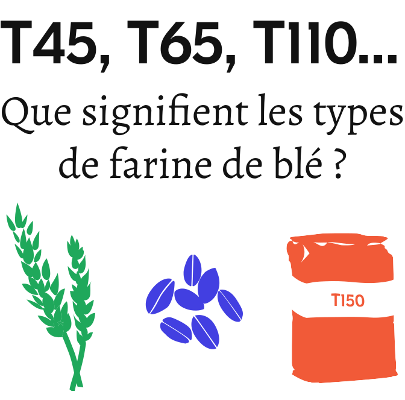

Une courte page web sur la farine :

En France, les farines de blé sont désignées par un "type" qui correspond à leur taux de cendres et donc à leur degré de raffinage. 1
Plus le type est bas, plus la farine est blanche car elle a été plus raffinée. Elle contient moins de son et de germe des grains de blé et donc moins de cendres.
On peut aussi dire que les types de farine indiquent leur richesse en son. Plus le type est élevé plus la farine est riche en son (l'enveloppe du grain) et donc en fibres.
Les 6 types de farine de blé homologués en France 2
| Type | Taux de cendres | Description et exemple d'utilisation |
|---|---|---|
| T45 | moins de 0,5 % | La farine la plus blanche; adaptée à la patisserie, les pizzas |
| T55 | de 0,5 à 0,6 % | Farine blanche; utilisée pour le pain blanc |
| T65 | de 0,62 à 0,75 % | Farine blanche; utilisée pour le pain de campagne |
| T80 | de 0,75 à 0,9 % | Farine semi-complète; utilisée pour le pain semi-complet |
| T110 | de 1 à 1,2 % | Farine complète; utilisée pour le pain complet |
| T150 | plus de 1,4 % | Farine intégrale; utilisée pour le pain complet “intégral” |
Des cendres dans la farine ?
Pour devenir de la farine, les grains de blé subissent plusieurs opérations dont deux très importantes : la mouture 3 et le blutage 4.
D’abord, les grains de blé sont broyés et réduits en poudre, c’est ce que l’on appelle la mouture.
Puis cette mouture (la poudre de grain) est tamisée, de plus en plus finement, pour séparer la farine blanche venant de l’amande et les résidus de son (l’enveloppe) et du germe. C’est le blutage.

Fun fact à sortir en soirée : Les résidus éliminés de la farine par le blutage (le son et le germe) sont nommés issues 5.
Pour mesurer à quel point une farine a été blutée (raffinée), on en fait bruler un échantillon dans un four de laboratoire 6. Le rapport entre la masse de cendres restantes et la masse de l’échantillon de départ se nomme le taux de cendres.
Les taux de cendres et de blutage sont liés : plus une farine est blutée, moins il y aura de cendres. En effet, les matières qui restent après la combustion (et qui constituent les cendres) se trouvent en grande partie dans l’enveloppe du blé (le son) et le germe 7. Or ce sont ces parties du grain qui sont retirées de la farine par le blutage.
Pour résumer : de T45 à T65 : farines blanches; Au delà : de T80 à T150 : farines semi-complètes ou complètes !
Mais pourquoi enlève-t-on le son et le germe de la farine ?
L’apparition du raffinage des farines de céréales possèdent certainement de nombreuses explications. On peut notamment souligner le fait que les farines raffinées se conservaient mieux (en raison de la quantité réduite de lipides qui s’y trouvent).
Par ailleurs, à certaines époques, la farine de blé tendre (ou froment) raffinée et blanche, plus difficile à produire et donc plus chère, était consommée par les élites. La farine de blé blanche représentait un luxe (un raffinement) qui s’est démocratisé et répandu à travers les populations moins aisées à mesure que cet aliment devenait plus abordable.
Ce sont quelques raisons, parmi d’autres certainement, qui expliquent qu’aujourd’hui on raffine la farine de blé pour en faire des pains blancs.
Sources
- Wikipédia, Farine de blé
- Journal officiel de la République française - 20 Juillet 1963, Homologation des types de farine de blé
- Wikipédia, Meule à grain / Michèle Mosiniak, Roger Prat et Jean-Claude Roland, Du blé au pain - La farine
- Wikipédia, Blutage
- Wikipédia, Issues de blé
- Il y a d’autres méthodes de dosage du taux de cendres, comme l’analyse infrarouge par exemple, mais on parle ici de la méthode “par incinération” prescrite par la norme NF EN ISO 2171 Juin 2010.
- I.N.B.P, Les Nouvelles de la Boulangerie Pâtisserie - Mieux connaître la farine.